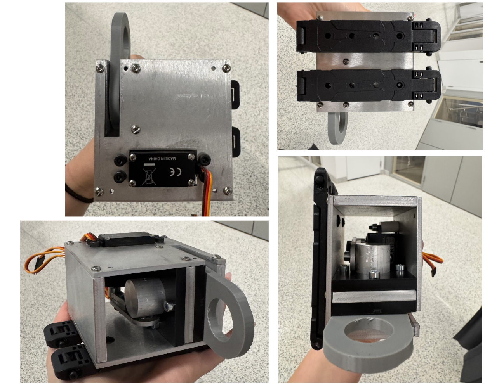

Experience Overview
Role: Product Manager · Team: Duke University · Focus: Customer Discovery & MVP Strategy
I was selected as a Product Manager alongside two other Duke students to work with
Gladiator Allegiance, a startup team bringing a patented product concept to market.
Our student team partnered directly with three clients, acting as an extension of their early-stage
product development process.
During the first semester, my primary responsibility was leading customer discovery.
I worked closely with the client team to identify and refine target user groups, conducting research
to understand pain points, motivations, and unmet needs within potential consumer segments.
These insights directly informed product strategy decisions and were used to guide the scope,
feature prioritization, and constraints for the first minimum viable prototype,
which we are now beginning to design and build in the current semester.
Further details are confidential under NDA,
I will update when I can!
Prototype Development

Design Process
During the second phase of the project, our team translated customer
discovery findings into design requirements for the initial prototype.
Insights gathered from interviews and market research helped identify
the most important user needs and guided early concept generation.
We evaluated multiple design directions, considering functionality,
manufacturability, user experience, and business constraints. Through
iterative discussions with the client team, we narrowed potential
solutions and developed specifications for a minimum viable prototype.
The device is an RF-controlled mechanical release system designed to securely connect and detach two separate components. A servo motor actuates a lock-and-key mechanism in which a cylindrical key engages with a hook element to maintain the connection between Container A and Container B. When a signal is received from the RF remote, the servo rotates, retracting the key and releasing the hook. This allows the connected component to detach quickly and reliably.
The mechanism was designed for both strength and reusability. Following release, the system can be reattached by reconnecting the hook element and returning the servo-driven key to its locked position. The locking component is capable of rotating through 180°, enabling a wide range of attachment orientations while maintaining secure engagement. The final design is able to withstand over 300 pounds of lateral force, providing a robust solution for applications requiring both high load capacity and remote-release functionality.
Further details of the design process and prototype remain confidential
under NDA, but this work provided valuable experience in connecting
customer insights directly to product development decisions.